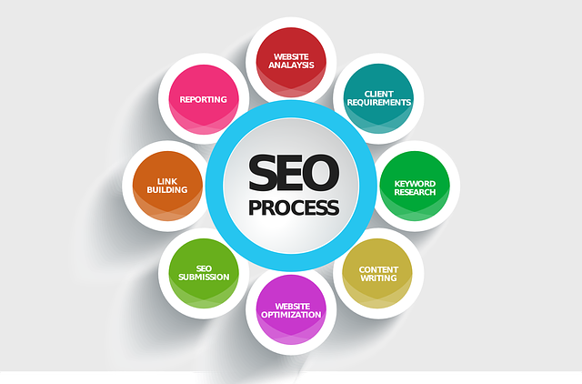

Content Marketing: Como Criar Conteúdo que Engaja e Converte

O marketing de conteúdo é uma das estratégias mais eficazes para atrair e engajar sua audiência, transformando visitantes em clientes. Neste artigo, vamos compartilhar as melhores práticas e estratégias para criar conteúdo que não apenas engaja, mas também converte. Vamos explorar cinco táticas essenciais que podem impulsionar seu conteúdo e maximizar seu impacto.
1. Conheça sua audiência
Antes de criar qualquer tipo de conteúdo, é essencial entender profundamente seu público-alvo. Realize pesquisas para identificar suas necessidades, interesses e pontos de dor. Considere criar personas para representar diferentes segmentos da sua audiência, ajudando a guiar o tipo de conteúdo que você deve produzir. Perguntas a serem feitas incluem:
- Quais são os desafios que meu público enfrenta?
- Que tipo de informações eles buscam?
- Como eles preferem consumir conteúdo (textos, vídeos, imagens)?
Compreender sua audiência permite que você crie conteúdo relevante que realmente ressoe com eles.
2. Defina objetivos claros
Cada peça de conteúdo deve ter um propósito específico. Seja aumentar o engajamento, gerar leads ou educar sua audiência, tenha objetivos claros que guiem sua estratégia de conteúdo. Pergunte a si mesmo:
- O que espero alcançar com este conteúdo?
- Quais métricas usarei para medir o sucesso?
Definir objetivos ajuda a manter o foco e a medir o desempenho de suas campanhas de conteúdo ao longo do tempo.
3. Crie conteúdo valioso e original
Foque em produzir conteúdo de qualidade que ofereça valor real para sua audiência. Seja informativo, útil ou inspirador, seu conteúdo deve se destacar da concorrência. Considere:
- Pesquisas e dados novos que possam interessar ao seu público.
- Histórias de sucesso e estudos de caso que mostrem como seus produtos ou serviços ajudaram clientes.
- Guias e tutoriais que ofereçam soluções práticas para problemas comuns.
Conteúdo valioso não apenas engaja, mas também constrói a credibilidade da sua marca.
4. Otimize para SEO
A otimização para mecanismos de busca (SEO) é crucial para aumentar a visibilidade do seu conteúdo. Incorpore palavras-chave relevantes, crie títulos atraentes e utilize descrições meta eficazes. Aqui estão algumas dicas:
- Use ferramentas como o Google Keyword Planner para identificar palavras-chave com bom volume de busca.
- Escreva títulos que chamem a atenção e que incluam palavras-chave.
- Utilize links internos para direcionar tráfego para outras partes do seu site.
Uma boa otimização ajuda seu conteúdo a ser encontrado mais facilmente por pessoas que buscam informações relacionadas ao seu nicho.
5. Use formatos variados
Não se limite a apenas um formato de conteúdo. Experimente diferentes tipos, como:
- Blog posts: ótimos para conteúdo detalhado e informativo.
- Vídeos: eficazes para demonstrar produtos ou contar histórias.
- Infográficos: ideais para apresentar dados e informações de forma visual.
- Podcasts: uma forma envolvente de discutir tópicos e entreter sua audiência.
Variedade de formatos não apenas mantém seu público engajado, mas também atende às diferentes preferências de consumo de conteúdo.
Solicite seu Projeto de Content Marketing
Quer criar conteúdo que realmente engaja e converte? Nossa equipe oferece soluções personalizadas para ajudá-lo a desenvolver uma estratégia de marketing de conteúdo eficaz. Entre em contato conosco para uma consulta gratuita!
Pronto para transformar seu content marketing?
Deixe-nos ajudá-lo a construir uma presença online forte com conteúdo envolvente. Solicite seu projeto de marketing de conteúdo agora mesmo!
Solicitar Projeto